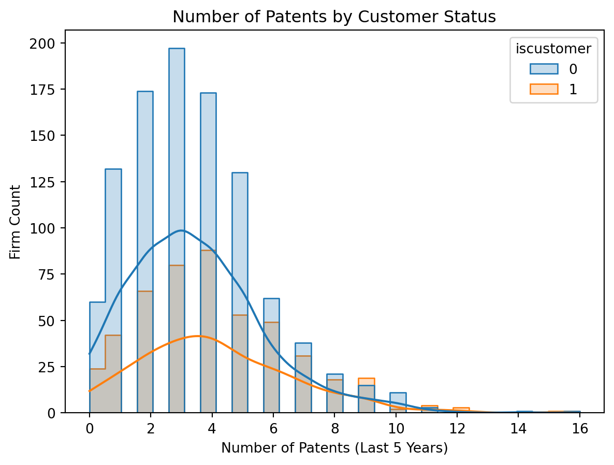
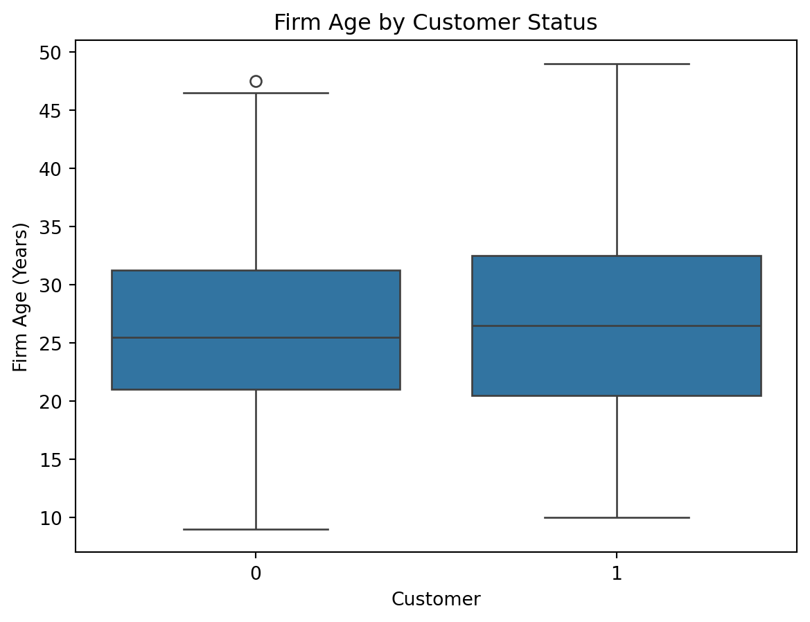
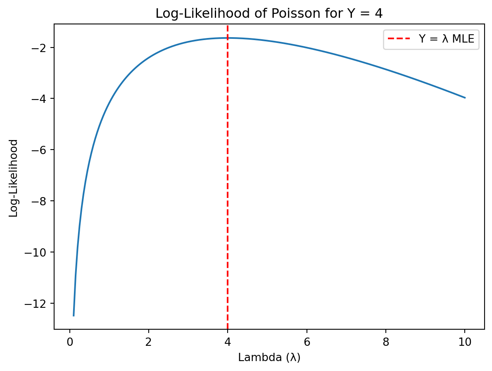
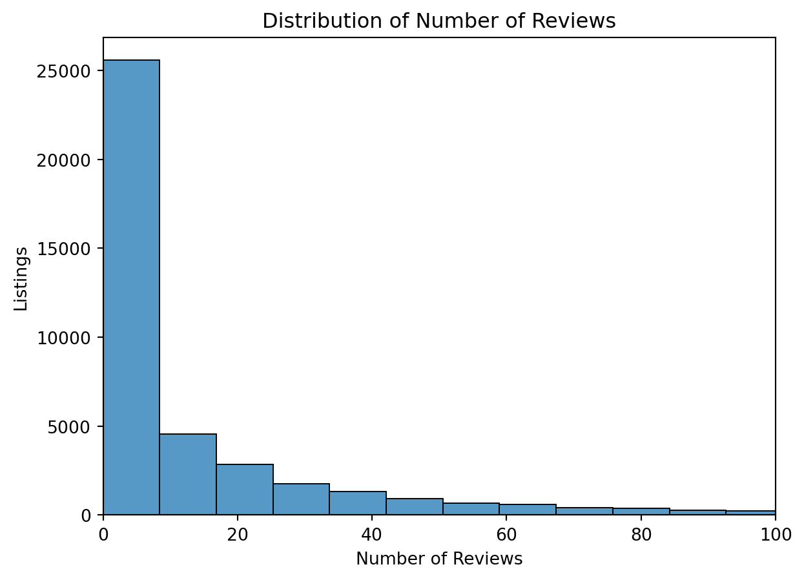
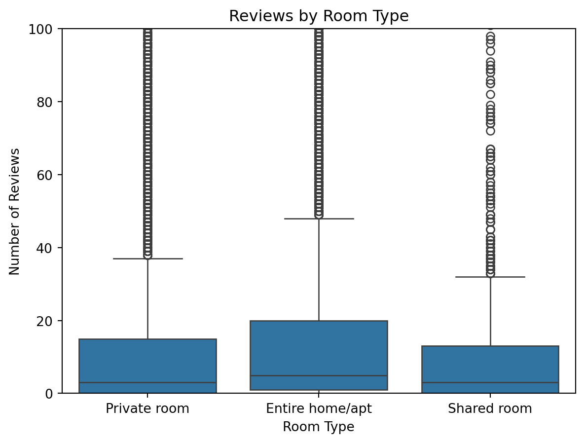

Blueprinty is a small firm that makes software for developing blueprints specifically for submitting patent applications to the US patent office. Their marketing team would like to make the claim that patent applicants using Blueprinty’s software are more successful in getting their patent applications approved. Ideal data to study such an effect might include the success rate of patent applications before using Blueprinty’s software and after using it. Unfortunately, such data is not available.
However, Blueprinty has collected data on 1,500 mature (non-startup) engineering firms. The data include each firm’s number of patents awarded over the last 5 years, regional location, age since incorporation, and whether or not the firm uses Blueprinty’s software. The marketing team would like to use this data to make the claim that firms using Blueprinty’s software are more successful in getting their patent applications approved.
Data Load and Overview
import pandas as pdimport seaborn as snsimport matplotlib.pyplot as plt# Load Blueprinty datadf = pd.read_csv("blueprinty.csv")df.head()
patents
region
age
iscustomer
0
0
Midwest
32.5
0
1
3
Southwest
37.5
0
2
4
Northwest
27.0
1
3
3
Northeast
24.5
0
4
3
Southwest
37.0
0
# Histogram comparing patent countssns.histplot(data=df, x='patents', hue='iscustomer', kde=True, element='step')plt.title("Number of Patents by Customer Status")plt.xlabel("Number of Patents (Last 5 Years)")plt.ylabel("Firm Count")plt.show()

We see a clear shift in the distribution of patent counts between Blueprinty customers and non-customers.
Blueprinty customers are not selected at random. It may be important to account for systematic differences in the age and regional location of customers vs non-customers.
# Compare mean number of patentsdf.groupby('iscustomer')['patents'].mean().round(2)# Boxplot of firm agesns.boxplot(data=df, x='iscustomer', y='age')plt.title("Firm Age by Customer Status")plt.xlabel("Customer")plt.ylabel("Firm Age (Years)")plt.show()

# Region comparisonpd.crosstab(df['region'], df['iscustomer'], normalize='index') \ .round(2) *100
iscustomer
0
1
region
Midwest
83.0
17.0
Northeast
45.0
55.0
Northwest
84.0
16.0
South
82.0
18.0
Southwest
82.0
18.0
Estimation of Simple Poisson Model
Since our outcome variable of interest can only be small integer values per a set unit of time, we can use a Poisson density to model the number of patents awarded to each engineering firm over the last 5 years. We start by estimating a simple Poisson model via Maximum Likelihood.
Log-Likelihood Function
We assume that the number of patents awarded to each firm over the last 5 years follows a Poisson distribution. The Poisson density is defined as:
import numpy as npfrom scipy.special import gammaln # log(Y!) for stabilitydef poisson_log_likelihood(lmbda, y):# log-likelihood of Poisson for a single value or arrayreturn np.sum(-lmbda + y * np.log(lmbda) - gammaln(y +1))
As expected, the log-likelihood is maximized when λ = Y.
import matplotlib.pyplot as plt# Example: one firm with 4 patentsy_obs =4lambdas = np.linspace(0.1, 10, 200)logliks = [poisson_log_likelihood(lmbda, y_obs) for lmbda in lambdas]plt.plot(lambdas, logliks)plt.title("Log-Likelihood of Poisson for Y = 4")plt.xlabel("Lambda (λ)")plt.ylabel("Log-Likelihood")plt.axvline(x=y_obs, color='red', linestyle='--', label='Y = λ MLE')plt.legend()plt.show()

Maximum Likelihood Estimator for the Poisson Model
Taking the derivative of the log-likelihood function and setting it to zero gives:
This confirms that the sample mean is the MLE for the Poisson parameter λ.
from scipy import optimizeY = df['patents'].values# Negative log-likelihood (since most optimizers minimize)def neg_loglik(lmbda):return-poisson_log_likelihood(lmbda, Y)result = optimize.minimize_scalar(neg_loglik, bounds=(0.01, 20), method='bounded')lambda_mle = result.xprint(f"MLE estimate of λ: {lambda_mle:.3f}")print(f"Sample mean of Y: {np.mean(Y):.3f}")
MLE estimate of λ: 3.685
Sample mean of Y: 3.685
Estimation of Poisson Regression Model
Next, we extend our simple Poisson model to a Poisson Regression Model such that \(Y_i = \text{Poisson}(\lambda_i)\) where \(\lambda_i = \exp(X_i'\beta)\). The interpretation is that the success rate of patent awards is not constant across all firms (\(\lambda\)) but rather is a function of firm characteristics \(X_i\). Specifically, we will use the covariates age, age squared, region, and whether the firm is a customer of Blueprinty.
Estimation of Poisson Regression Model
We now extend the simple Poisson model to a Poisson regression model. Let:
Based on the model, using Blueprinty is associated with an average increase of approximately X patents per firm (replace X with actual value). Because this is a log-linear model, we interpret the coefficients multiplicatively on the rate scale.
# Create X0 (all non-customers), X1 (all customers)X0 = X.copy()X0['iscustomer'] =0X0 = X0[X.columns]X1 = X.copy()X1['iscustomer'] =1X1 = X1[X.columns]X0_mat = X0.values.astype(float)X1_mat = X1.values.astype(float)y_pred_0 = np.exp(X0_mat @ beta_hat)y_pred_1 = np.exp(X1_mat @ beta_hat)# Average differenceeffect = np.mean(y_pred_1 - y_pred_0)print(f"Estimated average effect of Blueprinty: {effect:.2f} more patents per firm")
Estimated average effect of Blueprinty: 0.00 more patents per firm
AirBnB Case Study
Introduction
AirBnB is a popular platform for booking short-term rentals. In March 2017, students Annika Awad, Evan Lebo, and Anna Linden scraped of 40,000 Airbnb listings from New York City. The data include the following variables:
Variable Definitions
- `id` = unique ID number for each unit
- `last_scraped` = date when information scraped
- `host_since` = date when host first listed the unit on Airbnb
- `days` = `last_scraped` - `host_since` = number of days the unit has been listed
- `room_type` = Entire home/apt., Private room, or Shared room
- `bathrooms` = number of bathrooms
- `bedrooms` = number of bedrooms
- `price` = price per night (dollars)
- `number_of_reviews` = number of reviews for the unit on Airbnb
- `review_scores_cleanliness` = a cleanliness score from reviews (1-10)
- `review_scores_location` = a "quality of location" score from reviews (1-10)
- `review_scores_value` = a "quality of value" score from reviews (1-10)
- `instant_bookable` = "t" if instantly bookable, "f" if not
We use data on 40,000 Airbnb listings in NYC, scraped in March 2017.
We assume the number of reviews is a reasonable proxy for the number of bookings.
Data Load and Overview
import pandas as pdimport seaborn as snsimport matplotlib.pyplot as plt# Load Airbnb datadf = pd.read_csv("airbnb.csv")df.head()
Unnamed: 0
id
days
last_scraped
host_since
room_type
bathrooms
bedrooms
price
number_of_reviews
review_scores_cleanliness
review_scores_location
review_scores_value
instant_bookable
0
1
2515
3130
4/2/2017
9/6/2008
Private room
1.0
1.0
59
150
9.0
9.0
9.0
f
1
2
2595
3127
4/2/2017
9/9/2008
Entire home/apt
1.0
0.0
230
20
9.0
10.0
9.0
f
2
3
3647
3050
4/2/2017
11/25/2008
Private room
1.0
1.0
150
0
NaN
NaN
NaN
f
3
4
3831
3038
4/2/2017
12/7/2008
Entire home/apt
1.0
1.0
89
116
9.0
9.0
9.0
f
4
5
4611
3012
4/2/2017
1/2/2009
Private room
NaN
1.0
39
93
9.0
8.0
9.0
t
Exploratory Data Analysis (EDA)
# Histogram of number of reviewssns.histplot(df['number_of_reviews'], bins=50, kde=False)plt.title("Distribution of Number of Reviews")plt.xlabel("Number of Reviews")plt.ylabel("Listings")plt.xlim(0, 100) # Clip for visibilityplt.show()

# Boxplot: reviews by room typesns.boxplot(data=df, x='room_type', y='number_of_reviews')plt.title("Reviews by Room Type")plt.xlabel("Room Type")plt.ylabel("Number of Reviews")plt.ylim(0, 100)plt.show()

# Drop NA values in key columnsdf_model = df[['number_of_reviews', 'days', 'room_type', 'bathrooms', 'bedrooms','price', 'review_scores_cleanliness', 'review_scores_location','review_scores_value', 'instant_bookable']].dropna()
import statsmodels.api as smglm_poisson = sm.GLM(y, X_mat, family=sm.families.Poisson())glm_result = glm_poisson.fit()glm_result.summary()
Generalized Linear Model Regression Results
Dep. Variable:
y
No. Observations:
30160
Model:
GLM
Df Residuals:
30148
Model Family:
Poisson
Df Model:
11
Link Function:
Log
Scale:
1.0000
Method:
IRLS
Log-Likelihood:
-5.2215e+05
Date:
Thu, 01 May 2025
Deviance:
9.2283e+05
Time:
21:41:32
Pearson chi2:
1.66e+06
No. Iterations:
10
Pseudo R-squ. (CS):
0.7237
Covariance Type:
nonrobust
coef
std err
z
P>|z|
[0.025
0.975]
const
2.3093
0.026
87.955
0.000
2.258
2.361
x1
5.049e-05
3.94e-07
128.131
0.000
4.97e-05
5.13e-05
x2
-0.1097
0.004
-28.467
0.000
-0.117
-0.102
x3
0.0565
0.002
27.238
0.000
0.052
0.061
x4
-0.0009
2.54e-05
-36.640
0.000
-0.001
-0.001
x5
0.1073
0.002
71.426
0.000
0.104
0.110
x6
-0.1015
0.002
-61.332
0.000
-0.105
-0.098
x7
-0.0774
0.002
-42.335
0.000
-0.081
-0.074
x8
0.3545
0.003
122.520
0.000
0.349
0.360
x9
0.2999
0.005
58.052
0.000
0.290
0.310
x10
0.1221
0.003
35.142
0.000
0.115
0.129
x11
-0.0297
0.009
-3.208
0.001
-0.048
-0.012
Interpretation of Coefficients
Coefficients in a Poisson model represent log changes in the expected count of reviews.
For example, a coefficient of 0.3 on room_type_Private room implies that private rooms are expected to receive ~35% more reviews than shared rooms, all else equal.